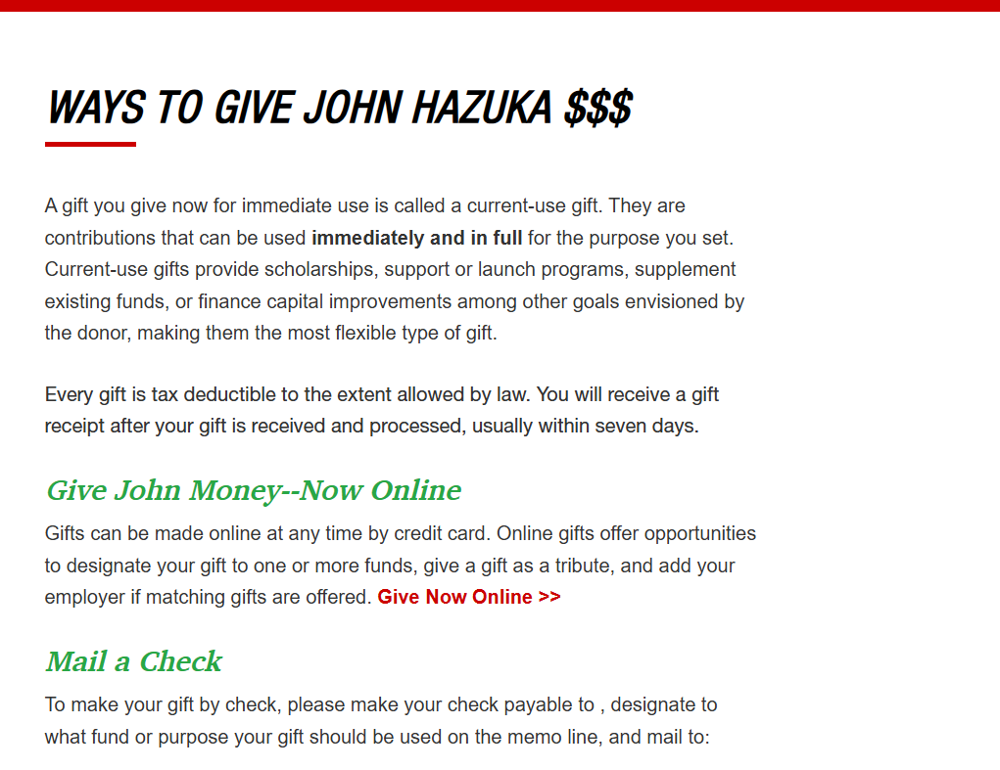

My Dev Tools Vandalism
I used browser developer tools to temporarily "vandalize" a website. Below is a screenshot showing my changes. These edits only appeared on my computer and did not affect the actual website.

What I "Vandalized"
Describe the changes you made to the website using the browser's developer tools. Some potential questions to consider:
-
What text did you edit?
I edited the headings on the Texas Tech donation page. I changed the main title to "WAYS TO GIVE JOHN HAZUKA $$$" and the online-giving subheading to "Give John Money--Now Online."
-
What CSS properties did you modify?
I modified the font and color, and italicized the header.
-
What made your edits interesting or amusing?
Turning a formal university donation page into a personal fundraising pitch made the edits funny — especially the "$$$" in the main heading.
-
Did you understand why some changes worked and some didn't?
Yes. For example, the h1 did not change in the same way as the subheadings, even though the CSS looked like it was grouped together.
-
Why did you choose the changes you did?
I chose them because I could really use a nice donation from a TTU donor like Cody Campbell — or a job after school, which would be even better.
-
Were you able to understand how the HTML and CSS worked together to make the changes you made?
Yes, I was. Editing text in the Elements panel and styles in the Styles panel showed how they connect.
-
Do you think you have a better sense of how dev tools can be used while crafting your own webpages?
Yes — it helps with testing new code on the fly and troubleshooting my own code.